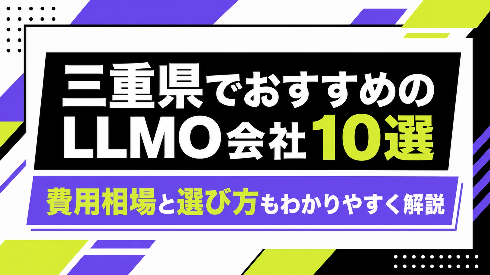
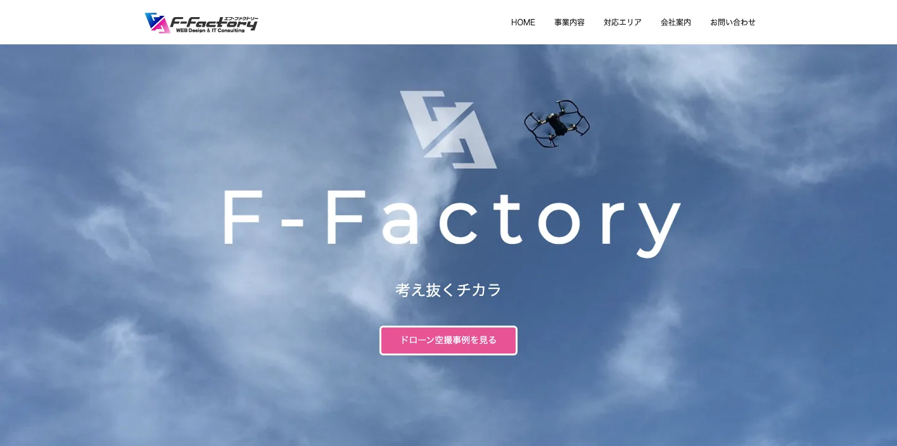
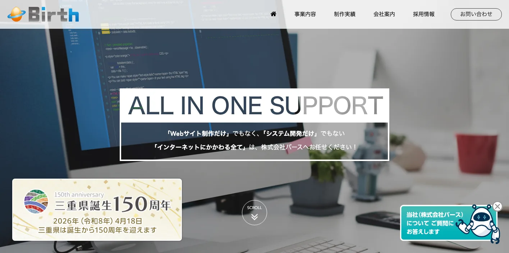
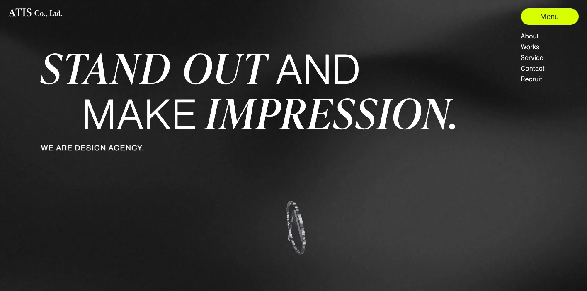
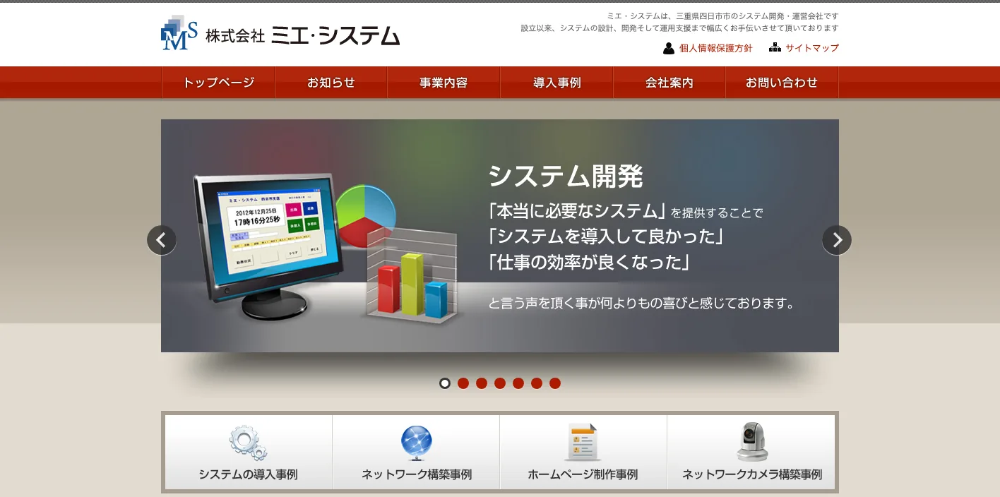
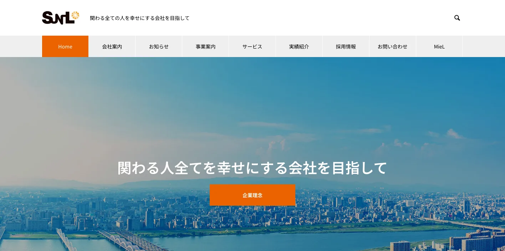
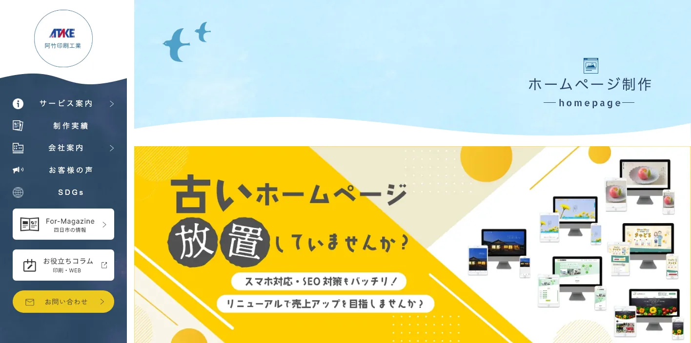
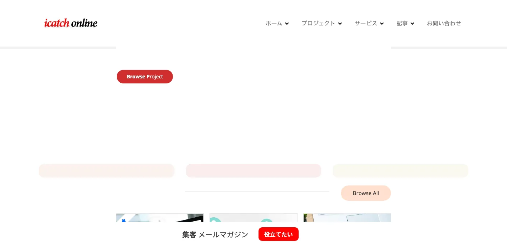
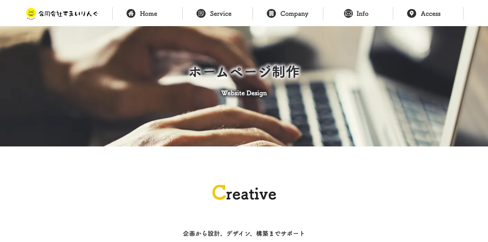
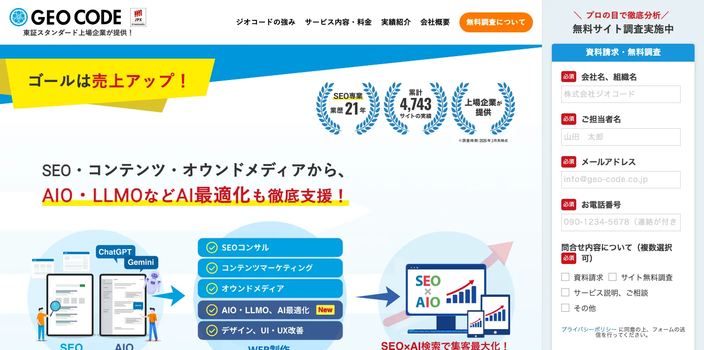

三重県でおすすめのLLMO会社10選｜費用相場と選び方もわかりやすく解説

三重県でLLMO会社を選ぶときは、「三重のホームページ制作会社」や「四日市のSEO会社」という探し方だけでは判断しきれません。北勢は四日市・桑名・鈴鹿を中心に製造業、化学、半導体、自動車関連のBtoB検索が多く、津・松阪は行政、医療、教育、食品、生活サービスの検索が混ざります。伊勢志摩は観光と宿泊、伊賀・名張は関西寄りの商圏や物流、東紀州は広域観光と地域情報の正確さが重要になります。
三重県の月別人口調査では、令和7年9月1日現在の推計人口が1,695,415人と公表されています。また、県の令和6年観光統計では観光レクリエーション入込客数が35,082千人、観光消費額が5,236億円です。さらに、令和3年経済センサスでは製造品出荷額等が10兆4,919億円で全国9位、県の統計ページでは電子部品・デバイス・電子回路製造業の製造品出荷額等が全国シェア11.2％と示されています。つまり三重県のLLMOは、観光記事だけでも、製造業の技術ページだけでも足りません。
この記事では、三重県でLLMOに取り組むときに比較したい会社、選び方、費用相場をまとめます。基礎から確認したい方はLLMO対策の基礎記事、東海圏の近隣県も比較したい方は愛知県の比較記事、岐阜県の比較記事、静岡県の比較記事も参考にしてください。
目次

三重県でおすすめのLLMO会社10選
今回は、三重県内に拠点があり、ホームページ制作、SEO、Webマーケティング、広告、システム開発、写真・動画、印刷、デジタル集客などの公開情報を確認しやすい会社を中心に選びました。県内でLLMO専業を前面に出す会社はまだ多くありません。そのため、AIに引用される情報設計、専門性の整理、構造化データ、FAQ、事例ページ、取材コンテンツ、ローカル検索まで広げて支援できるかを見ています。
三重県では、四日市・鈴鹿・桑名のBtoB、津・松阪の生活サービスや士業、伊勢・鳥羽・志摩の観光、伊賀・名張の広域商圏で、AIに聞かれる質問が変わります。まずは下の表で、自社の地域と事業に近い会社を絞ってください。
| 会社名 | 拠点・対応 | 向いている相談 |
|---|---|---|
| 株式会社エフ・ファクトリー | 名張市 | SEO、Webマーケティング、写真・動画を絡めた情報発信 |
| 株式会社バース | 四日市市 | Webサイト制作、システム開発、サーバー、長期運用 |
| 株式会社ATIS | 四日市市 | ブランディング、デザイン、地域企業の見せ方改善 |
| 株式会社ミエ・システム | 四日市市 | 業務システム、ホームページ、ネットワーク周辺まで含む相談 |
| 株式会社サンエル | 松阪市 | DX、アプリ、Webサービス、地域事業のデジタル化 |
| 阿竹印刷工業株式会社 | 四日市市 | 印刷物とWebを合わせたローカル販促、基本SEO |
| 株式会社アイキャッチ | 津市 | 広告、Googleマップ、LINE公式、行政・地域団体向け集客 |
| 合同会社すまいりんぐ | 津市 | ホームページ制作、運用、検索上位を目指す改善 |
| 株式会社LiKG | 全国対応 | LLMO診断、SEO連動、一次情報を使った記事制作 |
| 株式会社ジオコード | 全国対応 | AIO・LLMO、SEO、コンテンツ、サイト修正をまとめた支援 |
株式会社AIMAは三重本社の会社ではありませんが、全国対応でLLMO支援を提供しています。月額5万円のLLMO支援は初期費用なし・1ヶ月単位で始められ、質問設計、記事制作、引用チェックに絞って実務を進められます。四日市市、津市、鈴鹿市、松阪市、伊勢市、鳥羽市、志摩市、伊賀市、名張市のように商圏が分かれる場合も、まず無料LLMO診断で優先順位を確認できます。
株式会社エフ・ファクトリー

株式会社エフ・ファクトリーは、名張市に本社を置く会社です。公式サイトでは、ドローン空撮、動画撮影、写真撮影、ホームページ制作、ネットショップ構築、WordPress導入、SEO対策、ネット広告運用代行、集客コンサルティングなどを事業内容として確認できます。
三重県でLLMOを進める場合、名張・伊賀エリアは大阪、奈良、京都方面の検索文脈も入りやすい地域です。観光、住宅、不動産、士業、医療、地元店舗などで「どの地域から来る人に、どんな質問で選ばれたいか」を整理する必要があります。エフ・ファクトリーは写真・動画とWebマーケティングを組み合わせられるため、AI回答に使われる一次情報を増やしたい会社に向いています。
株式会社バース

株式会社バースは、四日市市のWeb制作・システム開発会社です。公式サイトでは、Webサイト制作、システム開発、レンタルサーバー、DTPデザインを事業として掲げ、会社案内では2000年設立、四日市市西浦に所在地があることを確認できます。
四日市周辺では、製造業、運送、医療、行政団体、建築、店舗など、サイトの目的が単純な集客だけではないケースが多くなります。LLMOでは、製品仕様、対応エリア、導入事例、保守体制、よくある質問をAIが読み取りやすい形で整えることが重要です。バースのようにWeb制作とシステム開発を両方扱う会社は、CMS改修やフォーム改善まで含めて相談しやすい候補です。
株式会社ATIS

株式会社ATISは、四日市市安島に拠点を置くデザイン会社です。公式サイトでは、株式会社ATISの所在地、2008年設立、デザインやクリエイティブによって街を魅力的にする考え方を確認できます。
LLMOは、文章を増やせばよい施策ではありません。三重県の企業がAI検索で選ばれるには、「何をやっている会社か」「どんな実績があるか」「なぜ信頼できるか」が一目で伝わるブランド設計も必要です。ATISは、四日市の企業、店舗、学校、地域ブランドの見せ方を整えたい場合に検討しやすい会社です。伊勢志摩や北勢でブランド印象を強めたい事業にも合います。
株式会社ミエ・システム

株式会社ミエ・システムは、四日市市のシステム開発会社です。公式サイトの会社案内では、事業内容としてシステム開発、コンピューター機器販売、ホームページ制作、拠点間ネットワーク構築、ネットワークカメラの販売・設置などが確認できます。
製造業、倉庫、建設、医療、介護、複数拠点の会社では、LLMO記事だけを作っても成果につながりにくいことがあります。問い合わせ前のAI回答では「対応できる業務範囲」「既存システムとの連携」「セキュリティ」「保守」を見られるからです。ミエ・システムは、ホームページと業務システムの両面を見ながら情報を整理したい企業に向いています。
株式会社サンエル

株式会社サンエルは、松阪市に本社を置く会社です。公式サイトでは、DX推進を通じて地域社会に貢献する方針、会社概要では松阪市湊町の本社、2009年設立、デジタル・ITサービス提供による支援を確認できます。
松阪市周辺では、食品、観光、地域サービス、医療福祉、地元企業のDXが重なります。AI検索では「松阪で相談できる会社」「予約や会員管理も含めて相談できるか」「地域サービスの運用まで任せられるか」といった質問が出やすくなります。サンエルは、WebサイトだけでなくアプリやITサービスを含めて顧客体験を変えたい会社に向いています。
阿竹印刷工業株式会社

阿竹印刷工業株式会社は、四日市市の印刷会社です。ホームページ制作サービスでは、印刷物と組み合わせたクロスメディア提案、スマホ対応、基本SEO対策、SSL対応、SNS連携、アフターフォローなどを確認できます。
三重県の地域ビジネスでは、紙の会社案内、チラシ、パンフレット、展示会資料、採用資料がまだ重要です。LLMOでは、紙で説明している強みをWebにも移し、AIが引用できるページへ変えることが有効です。阿竹印刷工業は、印刷物とWebの情報をそろえたい会社、四日市・桑名・鈴鹿の店舗やBtoB企業に向いています。
株式会社アイキャッチ

株式会社アイキャッチは、津市に本社を置く会社です。会社案内では、ディジタル集客コンサルティング、検索広告、SNS広告、Googleマップ・LINE公式アカウントを含む集客実践会、ウェブサイト企画・制作などを事業内容として確認できます。
津市周辺では、行政・公共団体、教育、医療、地域店舗、観光団体など、信頼性と運用の継続性が見られます。LLMOでは、Googleビジネスプロフィール、SNS、Webサイト、FAQ、実績ページの情報が食い違うと、AIに正しく扱われにくくなります。アイキャッチは、広告や地図検索、LINEなど、店舗や地域団体の入口をまとめて整えたい場合に候補になります。
合同会社すまいりんぐ

合同会社すまいりんぐは、津市のホームページ制作・アプリ開発などを扱う事業者です。公式サイトのホームページ制作ページでは、企画、システム構築、運用を重視し、公開後も検索上位を目指す改善を行う方針が確認できます。
LLMOは一度作って終わりではありません。三重県の中小企業では、少人数でサイトを更新しているケースが多いため、公開後の修正、事例追加、FAQ追加、検索レポートの確認まで続けられる体制が大切です。すまいりんぐは、津市や中勢エリアで、初めてサイト改善やAI検索対策を始めたい小規模事業者に向いています。
株式会社LiKG

株式会社LiKGは、全国対応のLLMOコンサルティングを提供する会社です。公式サイトでは、LLMO診断、LLMO×SEOコンサルティング、EEAT強化記事制作、独自データ活用、2,000名超のプロネットワークなどを確認できます。料金も、LLMO診断プラン10万円から、LLMO×SEOコンサルティングプラン30万円から、EEAT強化記事制作5万円/1記事からと公開されています。
三重県内で制作会社に依頼しながら、LLMOだけは専門会社に見てもらいたい場合に候補になります。四日市の製造業、伊勢志摩の観光、松阪の食品、伊賀・名張の広域商圏など、既存サイトの構成を変えずにAI検索での露出状況を診断したい会社に向いています。県内会社と役割分担して使うと現実的です。
株式会社ジオコード

株式会社ジオコードは、SEO、コンテンツ、オウンドメディア、AIO・LLMOなどAI最適化を支援する会社です。公式サイトでは、通常プラン15万円から、スタンダードプラン月30万円から、コンテンツマーケプラン月20万円からなどの料金例、AIO・LLMO、構造化データ、一次情報の組み込み、AI生成回答の競合調査などの施策を確認できます。
三重県内の企業でも、全国から問い合わせを取りたいBtoB、採用を強化したい製造業、ECや観光予約を伸ばしたい事業では、地域密着だけでは足りないことがあります。ジオコードは、SEO、コンテンツ、サイト修正、広告まで広く見たい会社に向いています。社内にWeb担当者がいて、定例で改善を回せる企業ほど相性がよいです。
会社情報は各社公式サイトの公開情報を確認しています。三重県の人口は三重県「人口・世帯の動き 令和7年9月1日現在」、観光は三重県「令和6年観光レクリエーション入込客数推計書・観光客実態調査報告書」、製造業は三重県「令和3年経済センサス 活動調査（製造業）」、工業製品の特徴は三重県「三重県の日本一」を参照しました。
三重県のLLMO会社を比較する際のポイント
三重県のLLMO会社選びでは、会社の所在地だけで決めないことが大切です。北勢、中勢、伊勢志摩、伊賀、東紀州では、AIに聞かれる質問も、引用されるべき情報も違います。ここでは、会社比較で見るべきポイントを地域別に整理します。
四日市・桑名・鈴鹿は、製造業とBtoBの説明力を見る
北勢は、三重県のなかでも製造業、化学、物流、自動車、電子部品に関する検索が多くなりやすい地域です。県の経済センサスでも、製造品出荷額等は10兆円を超え、全国上位の規模です。LLMOでは「何を作っているか」だけでなく、「どの工程に強いか」「対応できる材質や規格は何か」「短納期に対応できるか」「品質管理はどうしているか」まで、AIが要約しやすい情報が必要です。
この地域の会社を選ぶなら、制作実績の見た目よりも、技術情報を読みやすく整理できるかを見てください。製品ページ、設備紹介、事例、FAQ、採用ページを横断して直せる会社のほうが、AI検索には向いています。
津・松阪は、行政・医療・食品・生活サービスを分けて考える
津市は県庁所在地で、行政、教育、医療、士業、地域団体の情報が集まりやすい地域です。松阪市は、食品、観光、地域商業、医療福祉、地元企業のDXが混ざります。LLMOでは、同じ「相談したい」という検索でも、行政手続き、採用、店舗予約、医療の受診、法人向け問い合わせで必要な答えが変わります。
津・松阪で会社を選ぶなら、サイト全体の情報設計を見られるかが重要です。トップページだけを直すのではなく、サービス別ページ、料金ページ、アクセス、よくある質問、代表者情報、実績、口コミや事例の出し方まで整えてくれる会社を選ぶと、AIに誤解されにくくなります。
伊勢・鳥羽・志摩は、観光客の質問を先回りできるかを見る
三重県の令和6年観光統計では、伊勢神宮、おかげ横丁、二見興玉神社、鳥羽市旅館街などが主要な観光地点として示されています。伊勢志摩の観光では、「子連れで行けるか」「雨の日はどうするか」「宿から何分か」「外国人にも分かるか」「予約前に何を確認すべきか」という質問が多くなります。
この地域でLLMO会社を選ぶなら、宿泊、飲食、体験、交通、周辺観光を一つの導線として設計できるかを見てください。AIは単独の店舗情報だけでなく、旅程や比較の中で回答します。写真、地図、季節情報、FAQ、モデルコース、キャンセル規定を整えられる会社が合います。
伊賀・名張は、関西圏も含めた検索文脈を見られるかを見る
伊賀・名張は、三重県内だけでなく、奈良、大阪、京都方面とのつながりも見られる地域です。忍者観光、赤目四十八滝、住宅、医療、士業、物流、製造、地元店舗など、検索する人の居住地が県境をまたぐこともあります。
この地域では、「三重県内向け」だけに絞ると機会を逃すことがあります。LLMO会社には、地名の組み合わせ、来訪ルート、対応エリア、県外からの相談、広域の競合比較を整理できるかを確認してください。名張・伊賀の会社や、広域SEOに慣れた会社が候補になります。
東紀州は、広域観光と生活情報の正確さを優先する
尾鷲、熊野、紀北、御浜、紀宝などの東紀州では、熊野古道、自然観光、防災、医療、交通、移住、地域生活の情報が重要です。検索数だけを見ると大都市圏より小さく見えますが、AI検索では「比較」「行き方」「注意点」「近くの相談先」といった長い質問が出やすくなります。
東紀州でLLMOを行うなら、ページ数を増やすより、正確な情報を保つ体制が大事です。営業時間、アクセス、対応範囲、季節変動、災害時の案内、公的情報へのリンクなど、古くなると危険な情報を更新できる会社を選びましょう。
県内会社と全国対応会社は、役割を分けて考える
三重県内の会社は、地域の商圏や撮影、取材、現場感の把握に強みがあります。一方で、LLMO専業の診断、AI検索での露出調査、構造化データ、競合比較、記事制作の運用設計は、全国対応会社のほうが経験を持っている場合があります。
現実的には、県内会社に制作や撮影、運用を任せ、LLMOの診断や記事設計だけを専門会社に依頼する形もあります。逆に、社内にWeb担当者がいない場合は、窓口を一本化できる会社のほうが進めやすいです。三重県では「地域を知っている会社」と「AI検索を知っている会社」を分けて考えると、失敗しにくくなります。
三重県のLLMO会社に依頼する費用相場
LLMOの費用は、記事本数だけで決まるものではありません。三重県では、製造業の技術情報、観光の写真や季節情報、店舗のGoogleマップ、医療福祉の信頼性、食品や県産品の一次情報など、業種ごとに必要な作業が変わります。ここでは、依頼内容ごとに費用感を整理します。
診断だけなら、まずは質問の棚卸しが中心
最初の診断は、無料から10万円前後までが目安です。やることは、AIに聞かれそうな質問を洗い出し、自社サイトが答えられているかを確認することです。四日市の製造業なら「対応できる加工」「ロット」「納期」「品質管理」、伊勢志摩の宿泊なら「家族向け」「送迎」「食事」「雨の日」「周辺観光」などを見ます。
AIMAの無料LLMO診断のように、最初に弱いページや優先順位を確認してから依頼範囲を決める方法もあります。いきなり大型のサイト改修に進むより、まずはAIに答えられていない質問を見つけるほうが安全です。
月額5万〜15万円は、既存サイトを育てる段階
月額5万〜15万円ほどでは、既存サイトのFAQ追加、サービスページの修正、記事制作、内部リンク、構造化データの簡易対応、引用チェックなどが中心になります。小規模な店舗、士業、地域サービス、観光施設、採用ページの改善なら、この価格帯から始めやすいです。
三重県では、地域名を細かく分けるだけでも効果が出ることがあります。たとえば「三重県対応」だけでなく、「四日市・桑名・鈴鹿」「津・松阪」「伊勢・鳥羽・志摩」「伊賀・名張」といった単位でサービス説明を整えると、AIが回答しやすくなります。ただし、同じ文章を地名だけ変えて量産すると低品質になりやすいので注意が必要です。
月額15万〜30万円は、競合調査と構造改善まで含める段階
月額15万〜30万円では、AI検索で競合がどう引用されているか、どのページが不足しているか、既存記事をどう直すか、サイト構造をどう変えるかまで見ます。LiKGやジオコードのように、LLMO診断やAI最適化を明示している会社の料金も、このあたりから上の価格帯が中心になります。
四日市のBtoB、鈴鹿の自動車関連、津の医療や士業、伊勢志摩の観光予約、松阪の食品やECでは、記事だけでなく、事例、料金、よくある質問、導入までの流れ、代表者や専門家情報も必要です。AIに選ばれるには、ページ単体ではなくサイト全体の説明力を上げる必要があります。
制作・撮影・EC・システムを含めると、総額は大きく変わる
ホームページの新規制作、リニューアル、写真撮影、動画、EC、予約システム、会員機能、業務システム連携まで含めると、総額は数十万円から数百万円まで広がります。これはLLMO費用というより、事業の情報基盤を作る費用です。
三重県では、観光業なら写真やモデルコース、製造業なら設備・工程・品質のページ、食品なら産地・製法・安全性、医療福祉なら専門性と監修情報が重要になります。既存サイトが古い場合は、LLMO記事だけを追加しても限界があります。先にサイト構造と素材を整えたほうが、結果的に安く済むこともあります。
製造・観光・県産品は、一次情報づくりの費用を見込む
三重県で特に費用を見込むべきなのは、一次情報づくりです。電子部品、化学、自動車関連、食品、かぶせ茶、伊勢志摩観光、熊野古道などは、他社と同じ説明ではAIに選ばれにくくなります。現場写真、代表者コメント、事例、顧客の声、よくある質問、比較表、調査データを作ることで、AIが引用しやすい情報になります。
安く始めるなら、毎月1つのテーマだけを深く整える方法が現実的です。たとえば1ヶ月目は「よくある質問」、2ヶ月目は「事例」、3ヶ月目は「料金と相談の流れ」、4ヶ月目は「地域別ページ」のように進めます。三重県のように商圏が広い県では、一気に全域を作るより、重要な地域から順に作るほうが失敗しにくいです。
三重県のLLMO会社に関するよくある質問
三重県のLLMO会社に依頼する意味はありますか？
あります。三重県は、北勢の製造業、津・松阪の生活サービス、伊勢志摩の観光、伊賀・名張の広域商圏、東紀州の地域情報で検索意図が大きく違います。全国向けの一般記事だけでは、AIが地域ごとの違いを理解しにくくなります。自社がどの地域で、どの質問に答えたいかを整理する意味があります。
三重県内の会社でないとLLMOは任せられませんか？
県内会社でなくても依頼できます。ただし、撮影、取材、地域商圏の把握、地元企業とのやり取りは県内会社が進めやすい場合があります。AI検索の診断、構造化データ、競合調査、記事設計は全国対応会社でも進められます。地域理解が必要な作業と、専門性が必要な作業を分けて考えるのがおすすめです。
四日市市と津市では、対策内容は変わりますか？
変わります。四日市市は製造業、化学、物流、BtoBの説明力が重要になりやすく、津市は行政、医療、士業、教育、地域団体、生活サービスの信頼性が見られやすい地域です。同じLLMOでも、四日市では技術情報や事例、津では相談の流れ、資格、対応範囲、FAQの整備を優先することが多くなります。
伊勢志摩の観光業でもLLMOは必要ですか？
必要です。観光客はAIに「子連れで行ける宿」「雨の日の伊勢志摩」「鳥羽から車なしで行ける場所」「伊勢神宮の近くで食事できる店」など、具体的に質問します。公式サイトに情報が分かりやすく載っていないと、AIは旅行サイトや口コミサイトを参照しやすくなります。宿泊、飲食、体験、交通、周辺観光の情報を整理しておくことが大切です。
三重県の製造業でもLLMOは使えますか？
使えます。むしろ、製造業はLLMOと相性がよい分野です。AIは、加工内容、対応素材、設備、検査体制、納期、ロット、過去事例、対応エリアを整理して回答します。技術情報がPDFや古いページに埋もれている場合は、Webページとして読みやすく整理するだけでも相談前の理解が進みます。
松阪牛、かぶせ茶、真珠など県産品では何を整えるべきですか？
県産品では、産地、製法、品質、保存方法、購入方法、贈答対応、事業者の歴史、よくある質問を整えます。AIは「おすすめ」だけでなく「違い」「選び方」「価格の理由」「本物の見分け方」を答えようとします。自社の一次情報が少ないと、他サイトの一般論に負けやすくなります。
三重県のLLMO費用はどれくらい見ておけばよいですか？
小さく始めるなら無料診断から月額5万〜15万円、本格的に競合調査やサイト構造改善まで行うなら月額15万〜30万円以上を見ておくと現実的です。制作、撮影、EC、予約システム、業務システム連携を含む場合は別予算になります。まずは診断で、どこに費用をかけるべきかを決めましょう。
成果が出るまでの期間はどれくらいですか？
既存サイトの状態によりますが、FAQ追加やサービスページ修正のような軽い改善は1〜3ヶ月で変化を確認しやすくなります。製造業の事例ページ、観光のモデルコース、地域別ページ、専門家監修、構造化データまで整える場合は、半年以上かけて育てる前提が安全です。LLMOは短期の裏技ではなく、AIが引用しやすい情報を積み上げる施策です。
三重県でLLMO会社を選ぶなら、北勢・中勢・伊勢志摩・伊賀・東紀州の質問を分けましょう
三重県のLLMO会社選びで一番大事なのは、県全体を一つの市場として見ないことです。北勢は製造業とBtoB、中勢は行政・医療・生活サービス、伊勢志摩は観光、伊賀・名張は広域商圏、東紀州は正確な地域情報が重要です。同じ「三重県の会社」でも、AIに答えさせたい質問はまったく違います。
最初にやるべきことは、会社探しではなく質問の整理です。「誰が、どの地域から、何を比較して、どんな不安を持って問い合わせるのか」を決めると、必要な会社のタイプが見えてきます。県内会社に制作や取材を任せるのか、全国対応会社にLLMO診断を任せるのか、AIMAのような月額支援で小さく始めるのかも判断しやすくなります。
三重県でLLMOを始めるなら、まずは重要地域を1つ選び、その地域のFAQ、サービスページ、事例ページから整えるのがおすすめです。広げるのはその後で十分です。三重県では、地域ごとの質問に答えられる会社を選ぶことが、AI検索で見つけられる近道です。